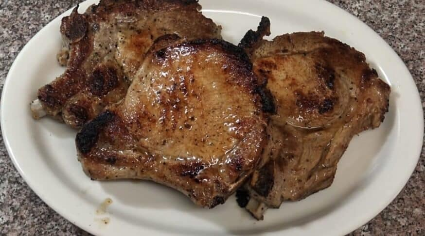

Chuletas Fritas

Description
Chuletas Fritas or Fried Pork Chops are a popular main course in Puerto Rico and a personal favorate. You can either marinade overnight, a couple hours before cooking, or even just season before throwing it on the pan if you are pressed for time.
Ingredients
- 4 Pork Chops
- 1 cup oil for frying
- 1 TBS oil for marinading
- 1 TBS Sofrito
- 1 TBS Minced Garlic
- 1 packet Sazon con Achote
- 1 TBS Adobo
Recipe Instructions
- Pour 1 cup oil into frying pan and set burner on high heat.
- Mix 1 TBS oil, sofrito, minced garlic, sazon and adobo in bowl and stir until mixed.
- Place pork chops in bowl and marinade overnight, for 2 hours in the fridge, until oil is heated.
- Once oil is ready cook pork chops 2-3 minutes per side until instant read thermometer reads 165 degrees.
Return to main page